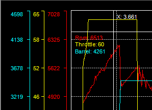
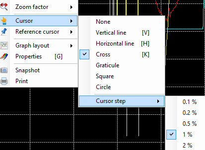

The main graphic cursor is a graphical help for analysis. It permits to point any coordinates within the graphic area.
Just click anywhere in the graphic area to make the cursor visible. Press the mouse right button and move the mouse to have the cursor following your movements. Release the mouse right button and the cursor gets fixed.
Default cursor type is 'Cross', which means that graphical cursor is taking a cross form.
There are actually seven cursor modes:
To change the cursor type, click on the 'Main graph cursor type' of the tool bar and select the desired type. You can also use the 'Cursor' menu of the graphic contextual menu (right click in the graphic area). 'Vertical line', 'Horizontal line' and 'Cross' are also available through keyboard shortcuts 'V', 'H' and 'K'.
While moving the graphic cursor, you can see in the legend that each trace value is updated with the actual value of the trace at the position of the cursor.

In addition of that, for 'Vertical', 'Horizontal' and 'Cross' cursor types, values of graphical coordinate are showed.

By coordinates, we mean X and Y axis values at the position of the cursor. For instance on the screen shot above, '34.414' is the value along the X axis and '4043' is the value along the Y axis which is named 'Rpm'. You may have more than one Y axis at the position of the cursor, in that case all axis values are showed.

Using 'left', 'right', 'up' and 'down' arrow keys of the keyboard you can move the cursor to the direction you want. Obviously, 'up' and 'down' movements are disabled for the 'Vertical line' cursor type, while 'left' and 'right' are disabled for the 'Horizontal line' type.
By setting the 'Cursor step' you can define how big (or small) cursor movement will be for each arrow key press event.
To change the cursor step, click the 'Main cursor step' button  of the tool bar and select the step you want. This command is also available through the graphic contextual menu, under the 'Cursor \ Cursor step' menu. You may also use 'Page Up' and 'Page Down' keys to change the cursor step.
of the tool bar and select the step you want. This command is also available through the graphic contextual menu, under the 'Cursor \ Cursor step' menu. You may also use 'Page Up' and 'Page Down' keys to change the cursor step.

Cursor step values are percentage values... OK but percentage of what ? Good question !
Step values are percentage of the current X axis values span. For example, if 100 seconds of data are plotted and the cursor step is 1%, the cursor will move by step of 1 second.
For Y axis, since it could be several different values here, screen size is used as reference value. In other words, with a cursor step of 1%, cursor will move up and down by steps representing 1% of the screen size.
Graphical properties of the graphic cursor (color, size) can be adjusted through the graphic configuration form. Please check the 'Cursors properties' section for more details.
Created with the Personal Edition of HelpNDoc: Free Kindle producer